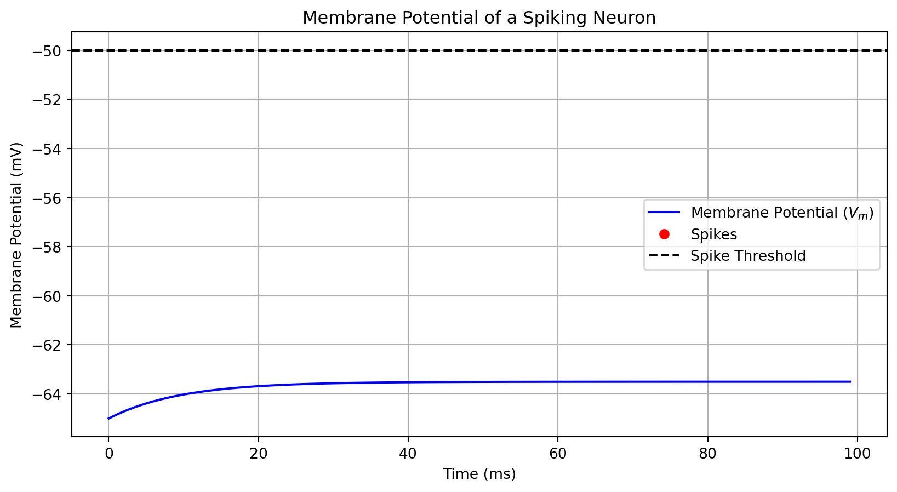
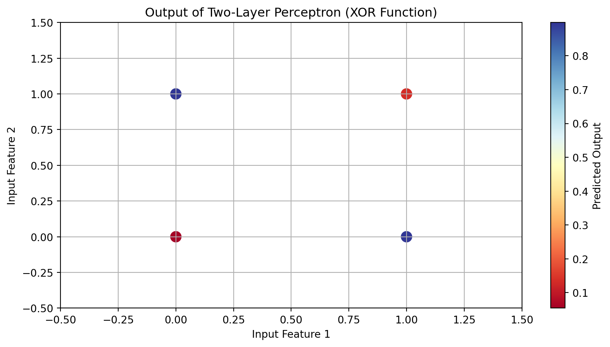

Machine learning (ML) is a branch of artificial intelligence (AI) focused on enabling computers and machines to imitate the way that humans learn, to perform tasks autonomously, and to improve their performance and accuracy through experience and exposure to more data.
A transformer, functioning as a perceptron within a multilayer large language model (LLM), utilizes self-attention to process input sequences.
Each word in the sentence “The best Costa Brava spot is …” can attend to all other words, allowing the model to capture contextual relationships and dependencies effectively.
This is accomplished through multi-head attention, where multiple attention mechanisms operate in parallel, enabling the model to analyze different aspects of the input simultaneously.
The repetition of these processes across layers enhances the model’s ability to refine its predictions, ultimately generating coherent and contextually relevant completions for the sentence.
Mathematical Model of an ANN
Each neuron computes a weighted sum of its inputs, adds a bias term, and applies an activation function. The output of a neuron can be represented as:
\[
y = f\left( \sum_{i=1}^{n} w_i x_i + b \right)
\]
where ( w_i ) are the weights, ( x_i ) are the inputs, ( b ) is the bias, and ( f ) is the activation function.
Neuron structure and artificial neural network. a Structure of biological neurons. b Mathematical inferring process of artificial neurons in multi-layer perceptron, including the input, weights, summation, activation function, and output. c Multi-layer perceptron artificial neural network
Python, Manim and Machine Learning
Python is a versatile programming language widely used for coding Artificial Neural Networks (ANNs) and Machine Learning (ML) algorithms.
Fourier Series
The Fourier series animation using Manim serves as an excellent example of how Python can be used to create complex visualizations and animations for mathematical concepts.
The Fourier series animation showcases Python’s ability to visualize complex mathematical concepts, which is crucial in ML for understanding data distributions, model architectures, and algorithm behavior.
Similarly, when working with ANNs and ML, you would use Python to create visualizations of your model’s architecture, training progress, and prediction results.
from manim import*class FourierSeriesAnimation(Scene):def construct(self):# Create axes axes = Axes( x_range=[-2*PI, 2*PI, PI/2], y_range=[-2, 2, 1], axis_config={"color": BLUE}, )# Create the original function (square wave)def square_wave(x):return np.sign(np.sin(x)) original_func = axes.plot(square_wave, color=WHITE)# Define a list of colors for the approximations colors = [RED, GREEN, YELLOW, PURPLE, ORANGE]# Create Fourier series approximations approximations = []for n inrange(1, 6):def fourier_series(x):returnsum([(4/ ((2*k -1) * PI)) * np.sin((2*k -1) * x) for k inrange(1, n+1)]) approximations.append(axes.plot(fourier_series, color=colors[n-1]))# Add elements to the sceneself.add(axes, original_func)# Animate the Fourier series approximationsfor approx in approximations:self.play(Create(approx), run_time=2)self.wait(1)self.wait(2)# Render the sceneif__name__=="__main__": scene = FourierSeriesAnimation() scene.render()
Python, Quarto and Machine Learning
Quarto supports executable Python code blocks within markdown.
This allows you to create fully reproducible documents and reports—the Python code required to produce your output is part of the document itself, and is automatically re-run whenever the document is rendered.
import numpy as npimport matplotlib.pyplot as plt# Simulation parametersT =100# Total time in msdt =1# Time step in mstime = np.arange(0, T, dt)# Neuron parametersV_th =-50# Spike threshold in mVV_reset =-65# Reset potential in mVR =1# Resistance in MΩtau =10# Membrane time constant in ms# Input current (constant for simplicity)I =1.5# Input current in μA# Initialize variablesV_m = V_reset * np.ones(len(time)) # Membrane potential arrayspikes = [] # List to store spike times# Simulation loopfor t inrange(1, len(time)): dV = (-(V_m[t-1] - V_reset) + R * I) / tau * dt # Update membrane potential V_m[t] = V_m[t-1] + dV# Check for spikeif V_m[t] >= V_th: spikes.append(t) # Record spike time V_m[t] = V_reset # Reset membrane potential after spike# Plotting resultsplt.figure(figsize=(10, 5))plt.plot(time, V_m, label="Membrane Potential ($V_m$)", color='blue')plt.plot(spikes, [V_th]*len(spikes), 'ro', label="Spikes") # Plot spikes as red dotsplt.axhline(V_th, color='black', linestyle='--', label="Spike Threshold")plt.title("Membrane Potential of a Spiking Neuron")plt.xlabel("Time (ms)")plt.ylabel("Membrane Potential (mV)")plt.legend()plt.grid()plt.show()

Figure 2: Membrane Potential of a Spiking Neuron
Perceptron
Code
import numpy as npimport matplotlib.pyplot as plt# Activation function: Sigmoiddef sigmoid(x):return1/ (1+ np.exp(-x))# Derivative of the sigmoid functiondef sigmoid_derivative(x):return x * (1- x)# Input data (4 samples, 2 features)X = np.array([[0, 0], [0, 1], [1, 0], [1, 1]])# Output data (XOR function)y = np.array([[0], [1], [1], [0]])# Seed for reproducibilitynp.random.seed(42)# Initialize weightsinput_layer_neurons =2# Number of input featureshidden_layer_neurons =2# Number of hidden neuronsoutput_neurons =1# Number of output neurons# Weights between input layer and hidden layerweights_input_hidden = np.random.uniform(size=(input_layer_neurons, hidden_layer_neurons))# Weights between hidden layer and output layerweights_hidden_output = np.random.uniform(size=(hidden_layer_neurons, output_neurons))# Learning ratelearning_rate =0.5# Training the networkepochs =10000for epoch inrange(epochs):# Forward pass hidden_layer_activation = np.dot(X, weights_input_hidden) hidden_layer_output = sigmoid(hidden_layer_activation) output_layer_activation = np.dot(hidden_layer_output, weights_hidden_output) predicted_output = sigmoid(output_layer_activation)# Backpropagation error = y - predicted_output d_predicted_output = error * sigmoid_derivative(predicted_output) error_hidden_layer = d_predicted_output.dot(weights_hidden_output.T) d_hidden_layer = error_hidden_layer * sigmoid_derivative(hidden_layer_output)# Updating weights weights_hidden_output += hidden_layer_output.T.dot(d_predicted_output) * learning_rate weights_input_hidden += X.T.dot(d_hidden_layer) * learning_rate# Final predictions after trainingfinal_hidden_layer_activation = np.dot(X, weights_input_hidden)final_hidden_layer_output = sigmoid(final_hidden_layer_activation)final_output_layer_activation = np.dot(final_hidden_layer_output, weights_hidden_output)final_predicted_output = sigmoid(final_output_layer_activation)# Plotting resultsplt.figure(figsize=(10, 5))plt.scatter(X[:, 0], X[:, 1], c=final_predicted_output.flatten(), cmap='RdYlBu', s=100)plt.title("Output of Two-Layer Perceptron (XOR Function)")plt.xlabel("Input Feature 1")plt.ylabel("Input Feature 2")plt.colorbar(label='Predicted Output')plt.grid()plt.xlim(-0.5, 1.5)plt.ylim(-0.5, 1.5)plt.show()

Figure 3: Output of Two-Layer Perceptron (XOR Function